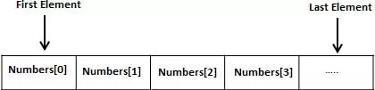
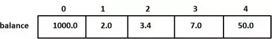

C – Arrays
Arrays a kind of data structure that can store a fixed-size sequential collection of elements of the same type. An array is used to store a collection of data, but it is often more useful to think of an array as a collection of variables of the same type.
Instead of declaring individual variables, such as number0, number1, ..., and number99, you declare one array variable such as numbers and use numbers[0], numbers[1], and ..., numbers[99] to represent individual variables. A specific element in an array is accessed by an index.
All arrays consist of contiguous memory locations. The lowest address corresponds to the first element and the highest address to the last element.

Declaring Arrays
To declare an array in C, a programmer specifies the type of the elements and the number of elements required by an array as follows −
type arrayName [ arraySize ];
This is called a single-dimensional array. The arraySize must be an integer constant greater than zero and type can be any valid C data type. For example, to declare a 10-element array called balance of type double, use this statement −
double balance[10];
Here balance is a variable array which is sufficient to hold up to 10 double numbers.
Initializing Arrays
You can initialize an array in C either one by one or using a single statement as follows −
double balance[5] = {1000.0, 2.0, 3.4, 7.0, 50.0};
The number of values between braces { } cannot be larger than the number of elements that we declare for the array between square brackets [ ].
If you omit the size of the array, an array just big enough to hold the initialization is created. Therefore, if you write −
double balance[] = {1000.0, 2.0, 3.4, 7.0, 50.0};
You will create exactly the same array as you did in the previous example. Following is an example to assign a single element of the array −
balance[4] = 50.0;
The above statement assigns the 5th element in the array with a value of 50.0. All arrays have 0 as the index of their first element which is also called the base index and the last index of an array will be total size of the array minus 1. Shown below is the pictorial representation of the array we discussed above −

Accessing Array Elements
An element is accessed by indexing the array name. This is done by placing the index of the element within square brackets after the name of the array. For example −
double salary = balance[9];
The above statement will take the 10th element from the array and assign the value to salary variable. The following example Shows how to use all the three above mentioned concepts viz. declaration, assignment, and accessing arrays −
#include<stdio.h>
int main (){
int n[10];/* n is an array of 10 integers */
int i,j;
/* initialize elements of array n to 0 */
for( i =0; i <10; i++){
n[ i ]= i +100;/* set element at location i to i + 100 */
}
/* output each array element's value */
for(j =0; j <10; j++){
printf("Element[%d] = %d\n", j, n[j]);
}
return0;
}
When the above code is compiled and executed, it produces the following result −
Element[0] = 100
Element[1] = 101
Element[2] = 102
Element[3] = 103
Element[4] = 104
Element[5] = 105
Element[6] = 106
Element[7] = 107
Element[8] = 108
Element[9] = 109
Arrays in Detail
Arrays are important to C and should need a lot more attention. The following important concepts related to array should be clear to a C programmer −
|
S.No. |
Concept & Description |
|
1 |
Multi-dimensional arrays C supports multidimensional arrays. The simplest form of the multidimensional array is the two-dimensional array. |
|
2 |
Passing arrays to functions You can pass to the function a pointer to an array by specifying the array's name without an index. |
|
3 |
Return array from a function C allows a function to return an array. |
|
4 |
Pointer to an array You can generate a pointer to the first element of an array by simply specifying the array name, without any index. |